WindowsMobileでGPS地図を使う : ネットワークの設定
Home > Software > ソフトウエア開発・サーバ管理のメモ帳 > このページ
Last Update
| デバイスの基本設定 デスクトップの設定 ネットワークの設定 GPSの設定 SiRF GPSモジュールの設定 地図の作成 |
インターネットに接続するための最低限の設定をします。具体的には、Wifi接続の設定、ブラウザ、メーラー、FTPクライアント、２ちゃんねるビューワーなどの設定を行います。
無線LANの設定
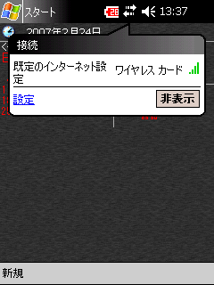
接続アイコンをクリックして
設定ダイアログを表示する
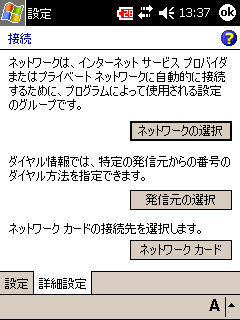
接続 － 詳細設定 － ネットワークカード
このメニューで無線LANの設定を行う
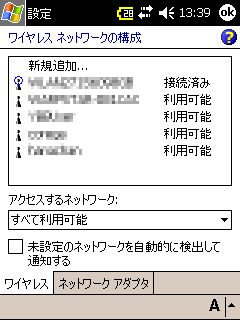
ワイヤレス・ネットワークの構成
アクセスポイント一覧が出る
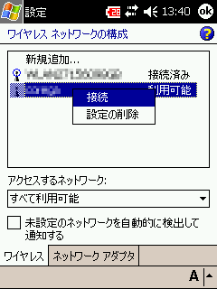
アクセスポイントの上でタップ＆ホールドを
行うと、「接続／削除」メニューが表示される
Windowsの無線LAN設定メニューのように、アクセスポイントの「セキュリティON／OFF」の状況を知ることは出来ない。また、タップ＆ホールドして現れるコンテキスト・メニューには「切断」という項目が無いため、接続状態のLANから切断するためには他のアクセスポイントへ接続しないといけない。
アクセスポイントをクリックすると、設定メニューが表示される
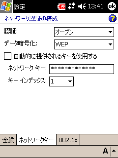
認証（暗号化）の設定
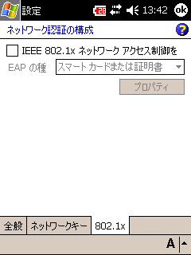
拡張認証の設定
認証の設定では、市販の一般的なアクセスポイントのセキュリティ設定が
- 暗号化無しの場合 → 認証：オープンシステム認証、データ暗号化：無効
- WEP暗号化の場合 → 認証：オープンシステム認証、データ暗号化：WEP
- TKIP暗号化の場合 → 認証：WPA-PSK、データ暗号化：TKIP
のように設定するとうまく繋がる（場合が多い）。
Wi-Fi Protected Access (WPA) の概要 （Microsoft TechNet）
稀な例として、DHCPではなく固定IPアドレスのネットワークに接続する場合は、「ワイヤレスネットワークの構成」の「ネットワークアダプタ」の設定で固定アドレスを指定する。
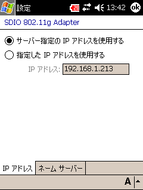
接続 － ネットワークカード － ネットワークアダプタ
IPアドレスの指定
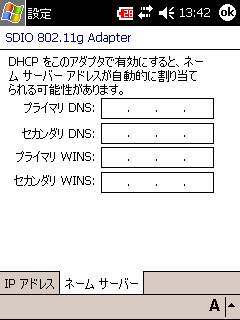
接続 － ネットワークカード － ネットワークアダプタ
DNSの設定
無線LAN接続状況の確認
接続アイコンをクリックすると出てくる
メッセージボックスには電波強度が表示される
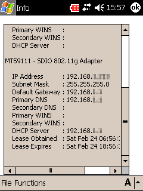
vxUtil (Personal)を用いて
IPアドレスの確認
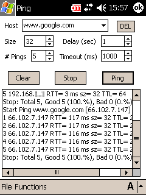
vxUtil (Personal)を用いて
ゲートウェイとgoogle.comにping
NTPサーバと時刻の同期
NTPサーバは、wiki@nothing NTP にリストアップされている。
メール（Pocket Outlook）の設定
POP3・SMTP サーバへのアクセスが、特殊なポート番号や特定の暗号化方式でアクセスしなければならないときを除いて、Pocket Outlook （受信トレイ）で問題ない。
なんといっても設定項目が少なすぎて、ニッチなニーズに対応できない。現在主流のサブミッション・ポート（TCP/587）しか通過できない場合には対応不可。
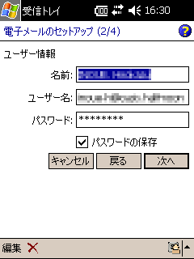
ユーザ名、パスワードの設定
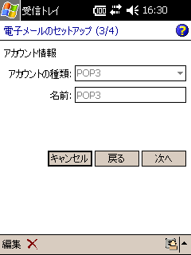
POP3/IMAP の選択
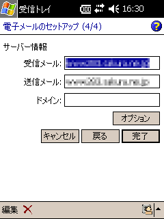
POP/SMTPサーバ名の設定
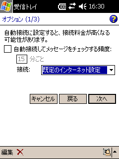
自動受信の設定
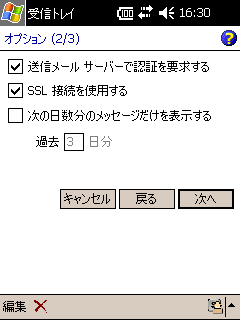
セキュリティ設定
SSL、認証のON/OFFが設定できる
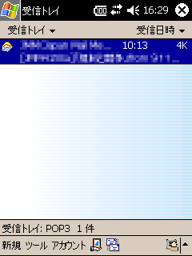
Pocket Outlook （受信トレイ）の受信画面
メール（nPOP）の設定
Pocket Outlook で出来ないような接続方法を試してみる場合は、nPOP を試してみては？ 現在主流のサブミッション・ポート（TCP/587）も用いることが出来る。
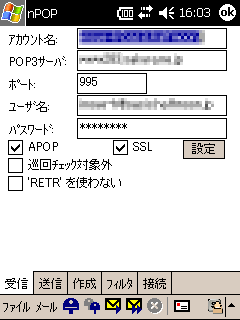
受信設定
POP3サーバ、ユーザ名、パスワードの設定
受信設定 － SSL方式の設定
自動/TLS1.0/SSL3.0/SSL2.0/STARTTLS
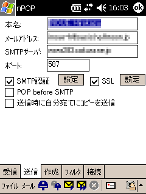
送信設定
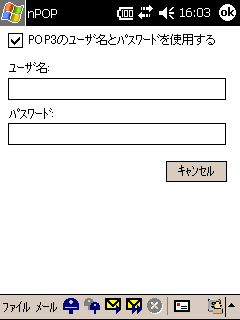
送信設定 － SMTP認証ユーザ名・パスワード
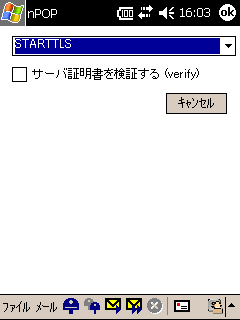
送信設定 － SSL方式の設定
自動/TLS1.0/SSL3.0/SSL2.0/STARTTLS
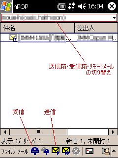
受信画面
nPOPはリモート・メールボックスを見に行くタイプのソフトなので、Pocket Outlookのように（基本的に）メールをダウンロードするようなソフトとはだいぶ使い勝手が違う。
メールの受信は、受信画面で「郵便箱の形をした青いボタン」を押すとダウンロードが行われる。
メールの送信は、送信箱で「メールをタップ＆ホールドして出るコンテキスト・メニューで、送信用にマーク」してから、「封筒の形をした黄色いボタン」を押すことで送信できる。
送信箱・リモートメールボックスの切り替えは、タイトル・バーの下にあるドロップダウンリストで行う。
インターネット・エクスプローラ
最近の画像やフレームを多用した巨大なページは、読み込みが遅いだけでなく途中でフリーズしたりします。一応見れるだけマシ... という代物でしょうか
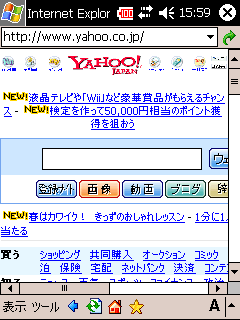
Yahoo! Japanを表示した
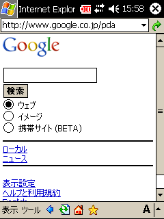
Google PDA版を表示した
FTPクライアント
ファイルの交換には必要です。 CedarFTPを利用しています
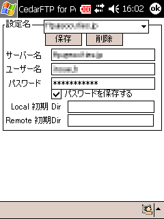
サーバ・ユーザ名・パスワードの設定
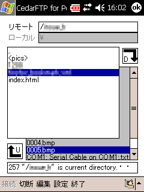
FTP接続中の画面
２ちゃんねるビュワー
ニュースをチェックするのは、重くて固まるインターネット・エクスプローラより、２ちゃんねるブラウザ（テキストのみ）の方が断然軽快です。
2++という専用ブラウザを使います
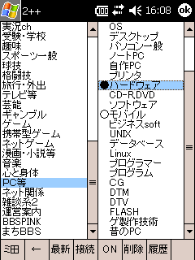
掲示板一覧
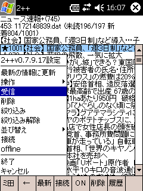
スレッド一覧やスレッドを読み込むときは、
「ミ田」でメニューを出し、「受信」
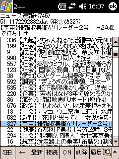
スレッド一覧
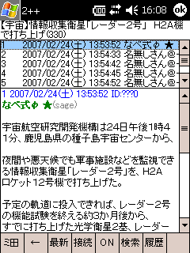
スレッドを開いたところ
元のメニューに戻るのは「←」ボタンを押す
このソフトのキャッシュファイルは、\My Documents\Log に格納されている。